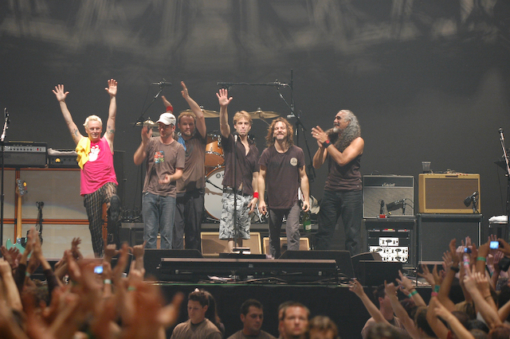

La banda
Pearl Jam és un grup de grunge format a Seattle, Estats Units, l'any 1990, amb integrants de les bandes Mother Love Bone i Temple of the Dog.
Amb l'edició del seu àlbum debut Ten el 1991, Pearl Jam irrompia amb força en l'àmbit musical alternatiu. Al costat de Nirvana, Alice in Chains, Stone Temple Pilots i Soundgarden estan considerats com una de les bandes més grans i influents de tota l'escena del moviment Grunge. Els seus membres fundadors i que encara segueixen al grup són Eddie Vedder (veu), Mike McCready (guitarra principal), Stone Gossard (guitarra rítmica), Jeff Ament (baix) i Matt Cameron (bateria).
Tot i ser reconeguts com un dels grups més importants i influents del grunge, Pearl Jam sempre va destacar per un rock amb tocs més melòdics i influències de grups de rock dels anys 1960 i 70 com The Who, Led Zeppelin o The Doors. Els seus membres sempre s'han caracteritzat pel seu rebuig a determinades pràctiques comunes a la indústria musical, com per exemple la realització de vídeos promocionals; també és conegut el seu boicot a l'empresa Ticketmaster. La revista Rolling Stone els va descriure el 2006 com un grup que "es va passar la major part de la dècada passada destruint la seva pròpia fama".
Pearl Jam és considerat un dels grups més importants de la dècada de 1990. Fins avui, el grup ha venut 30 milions d'àlbums als Estats Units, així com una quantitat aproximada de 70 milions de discos en tot el món. Pearl Jam ha sobreviscut i superat en vendes molts dels seus contemporanis de l'escena del rock alternatiu dels noranta, i està considerada una de les bandes més influents de la dècada. El crític de música Stephen Thomas Erlewine, de la revista musical Allmusic, qualifica Pearl Jam com "la banda de rock nord-americana més popular dels 90". Els àlbums Vitalogy i Ten han estat inclosos per la revista Rolling Stone a la seva llista dels 500 millors discos de la història. La banda ha estat inclosa al Rock and Roll Hall of Fame i el seu cantant Eddie Vedder figura a la setena posició de la llista dels 100 millors cantants de tots els temps elaborada per Rolling Stone.
El grup estava originalment compost per Stone Gossard (guitarra rítmica), Jeff Ament (baix), Mike McCready (guitarra principal), Eddie Vedder (veu) i Dave Krusen (bateria). El baterista en la formació actual és Matt Cameron, membre a la vegada de Soundgarden, que pertany al grup des de 1998.